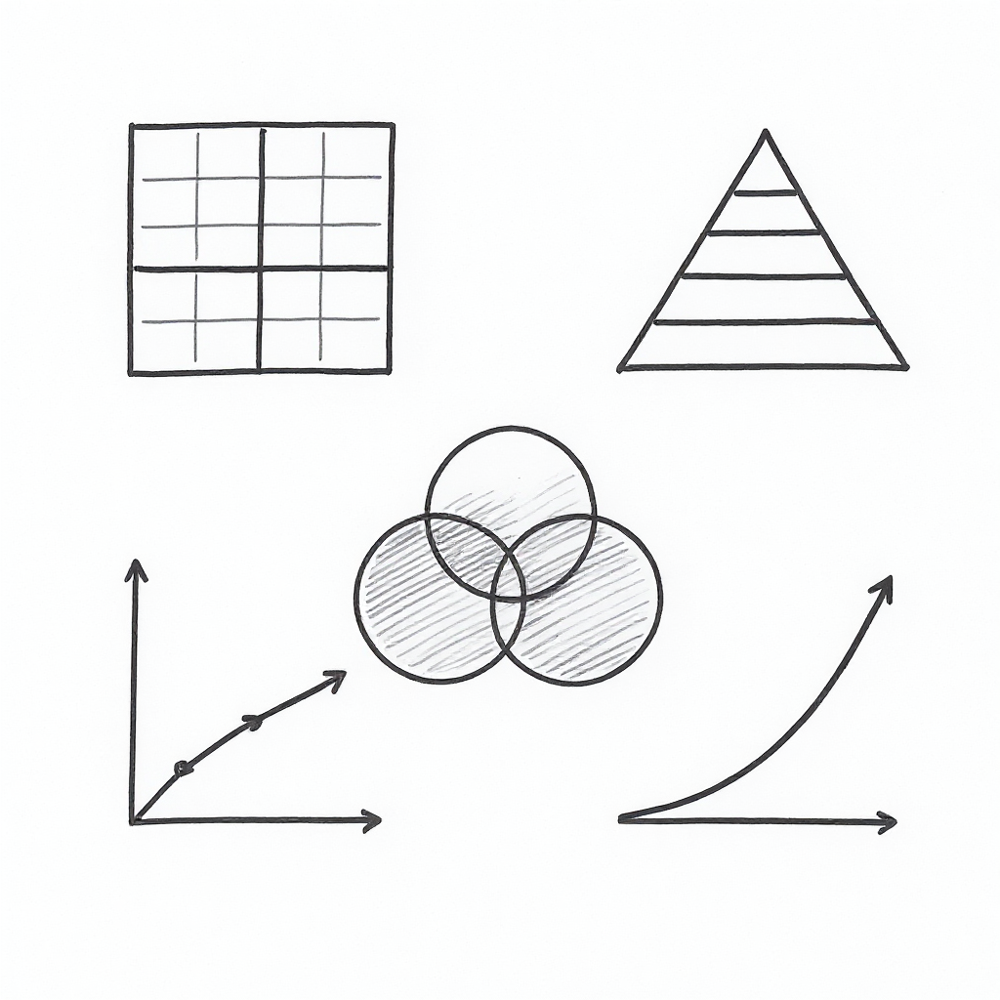

Frameworks Reference Sheet

AI-Driven Business Innovation
Strategic Frameworks Reference Sheet
Executive Education Curtin Business School
Your quick-reference guide to the five strategic frameworks
Five Strategic Frameworks
This reference sheet provides quick access to the five frameworks taught in the AI-Driven Business Innovation Masterclass.
What You’ll Find:
Framework 1: AI Transformation Matrix - Classify AI initiatives by strategic value - Four quadrants: Optimize, Enhance, Revolutionize, Transform
Framework 2: Data Value Pyramid - Assess your organization’s data maturity - Five levels from collection to autonomous operations
Framework 3: Three Horizons Model - Balance your AI portfolio across time horizons - Manage current operations while building the future
Framework 4: AI Investment Model - Evaluate AI proposals systematically - Strategic fit, feasibility, ROI, and risk assessment
Framework 5: Innovation Adoption Framework - Understand barriers to AI adoption - Plan for organizational change management
How to Use This Guide
During the workshop: - Keep this on your desk for quick reference - Use it during exercises to apply frameworks - Annotate with your own insights and notes
After the workshop: - Pin near your workspace - Reference when evaluating AI opportunities - Share with colleagues on your AI team
🌐 Digital Version: https://exec-ed.github.io/ai-business-innovation/
📧 Questions: michael.borck@curtin.edu.au
Framework 1: AI Transformation Matrix
Purpose: Classify AI initiatives to understand strategic value
Two Dimensions:
Dimension 1: Focus
- Process Focused: Automate/optimize existing processes (efficiency)
- Strategic Focused: New capabilities, products, business models (differentiation)
Dimension 2: Magnitude
- Incremental: Improve what exists (10-30% improvement)
- Transformational: Fundamentally change how business operates (10x change)
Four Quadrants:
| Incremental | Transformational | |
|---|---|---|
| Process | Optimize - Automate tasks, reduce costs | Revolutionize - Reinvent core processes |
| Strategic | Enhance - Improve products/services | Transform - New business models |
Examples: - Optimize: Automate invoice processing, chatbot for FAQs - Enhance: AI product recommendations, personalised marketing - Revolutionize: Fully autonomous supply chain, lights-out manufacturing - Transform: AI-as-a-Service new revenue stream, platform business model
Use this when: Prioritizing AI initiatives in your portfolio
Framework 2: Data Value Pyramid
Purpose: Understand data maturity and AI readiness
Five Levels (bottom to top):
Level 1: Data Collection
- Raw data from systems
- Example: Transaction logs, sensor data, customer interactions
Level 2: Data Integration
- Connected data from multiple sources
- Example: Customer 360 view, unified inventory system
Level 3: Descriptive Analytics
- “What happened?”
- Example: Dashboards, reports, KPIs
Level 4: Predictive Analytics
- “What will happen?”
- Example: Demand forecasting, churn prediction, maintenance alerts
Level 5: Prescriptive Analytics / Autonomous Operations
- “What should we do?” → System acts automatically
- Example: Dynamic pricing, auto-replenishment, self-optimizing systems
Key Insight: You can’t skip levels. AI requires strong data foundations.
Use this when: Assessing organisational readiness for AI initiatives
Framework 3: Three Horizons Model
Purpose: Balance AI portfolio across timeframes
Horizon 1: Optimize the Core (70% of investment)
- Timeframe: 0-12 months
- Goal: Improve current business
- AI Examples: Process automation, chatbots, predictive maintenance
- ROI: Quick, measurable, low risk
Horizon 2: Build Emerging Business (20% of investment)
- Timeframe: 1-3 years
- Goal: Develop new capabilities
- AI Examples: AI-enhanced products, new customer experiences, platform services
- ROI: Medium term, moderate risk
Horizon 3: Create the Future (10% of investment)
- Timeframe: 3-5+ years
- Goal: Transformational innovation
- AI Examples: New business models, AI-native ventures, autonomous operations
- ROI: Long term, higher risk, potential for breakthrough
Portfolio Balance: - Too much H1: Short-term thinking, miss opportunities - Too much H3: Burning cash on uncertain futures - Sweet spot: 70/20/10 allocation (adjust for industry)
Use this when: Building your AI investment portfolio
Framework 4: AI Investment Model
Purpose: Calculate ROI and make data-driven investment decisions
Value Categories
1. Cost Reduction - Labour savings from automation - Efficiency improvements - Error reduction
2. Revenue Growth - New products/features enabled by AI - Better conversion rates - Premium pricing for AI-enhanced offerings
3. Risk Reduction - Fraud detection savings - Compliance automation - Better decision-making reduces costly mistakes
4. Strategic Positioning - Competitive advantage - Market share gains - Option value (platform for future initiatives)
Investment Calculation
Total Value = Cost Reduction + Revenue Growth + Risk Reduction + Strategic Value
ROI = (Total Value - Investment Cost) / Investment Cost × 100%
Evaluation Criteria
Minimum thresholds: - Horizon 1 initiatives: ROI > 200% in Year 1 - Horizon 2 initiatives: ROI > 150% over 3 years - Horizon 3 initiatives: ROI > 100% over 5 years (or strategic must-have)
Risk-adjusted: - Low confidence in value → require higher ROI - High certainty → accept lower ROI
Use this when: Evaluating competing AI investment proposals
Framework 5: Innovation Adoption Framework
Purpose: Implement AI strategically across the organisation
Phase 1: Knowledge Building (3-6 months)
- Activities: Education, workshops, vendor briefings, pilot identification
- Goal: Build literacy and identify opportunities
- Investment: Low (1-5% of AI budget)
Phase 2: Pilot Experimentation (6-12 months)
- Activities: Small pilots, proof-of-concepts, learn by doing
- Goal: Validate technical feasibility and business value
- Investment: Medium (10-20% of AI budget)
Phase 3: Selective Deployment (12-18 months)
- Activities: Scale successful pilots, build capability, early production deployments
- Goal: Deliver initial business value
- Investment: Growing (30-40% of AI budget)
Phase 4: Scaling Operations (18-36 months)
- Activities: Broader rollout, platform building, centre of excellence
- Goal: Systematic value delivery
- Investment: Peak (40-50% of AI budget)
Phase 5: Comprehensive Transformation (36+ months)
- Activities: AI-native processes, continuous innovation, ecosystem partnerships
- Goal: AI as core competency
- Investment: Sustained (30-40% of AI budget, shifts to R&D)
Key Insight: Most organisations fail by trying to skip to Phase 4/5. Respect the journey.
Use this when: Planning multi-year AI transformation
Quick Decision Framework
When evaluating any AI initiative, ask:
1. Classification (Transformation Matrix)
2. Data Readiness (Data Value Pyramid)
3. Portfolio Balance (Three Horizons)
4. Investment Return (AI Investment Model)
5. Implementation Readiness (Innovation Adoption)
If you can’t clearly answer these 5 questions, you’re not ready to invest.
Common Strategic Mistakes to Avoid
Mistake 1: AI for AI’s Sake - ❌ Wrong: “We need to do AI because everyone else is” - ✅ Right: “This AI initiative solves business problem X and delivers ROI of Y”
Mistake 2: Skipping Data Foundations - ❌ Wrong: “Let’s jump straight to AI” - ✅ Right: “First fix data quality, then build analytics, then AI”
Mistake 3: All Horizon 1 (Short-term thinking) - ❌ Wrong: 100% investment in quick wins - ✅ Right: 70/20/10 balance across horizons
Mistake 4: All Horizon 3 (Moonshots only) - ❌ Wrong: “We’re building AGI and reinventing the industry” - ✅ Right: Mix of quick wins, growth, and transformation
Mistake 5: No ROI Discipline - ❌ Wrong: “It’s strategic, we can’t quantify the value” - ✅ Right: “Here’s the value across 4 categories, here’s the ROI calculation”
Mistake 6: Trying to Scale Before Piloting - ❌ Wrong: Phase 1 → Phase 4 (skip learning) - ✅ Right: Follow all 5 phases, earn your way to scale
Integration: How the Frameworks Work Together
Strategic Planning Process:
- Assess current state (Data Value Pyramid)
- Where is our data maturity?
- Classify opportunities (AI Transformation
Matrix)
- What types of initiatives are we considering?
- Balance portfolio (Three Horizons Model)
- Do we have the right mix across timeframes?
- Evaluate investments (AI Investment Model)
- Which initiatives have best ROI?
- Plan implementation (Innovation Adoption
Framework)
- What phase are we in? What’s next?
Decision-Making Process:
For each AI proposal: - Classify it (Matrix) - Check data readiness (Pyramid) - Assign to horizon (Three Horizons) - Calculate ROI (Investment Model) - Validate against maturity (Adoption Framework) - Then decide: Fund, defer, or reject
Your Action Plan
This week: 1. Map your current AI initiatives on the Transformation Matrix 2. Assess your data maturity on the Value Pyramid 3. Calculate portfolio balance across Three Horizons
This month: 1. Evaluate top 3 AI proposals using the Investment Model 2. Identify what phase you’re in on the Adoption Framework 3. Make portfolio rebalancing decisions
This quarter: 1. Build AI governance using these frameworks 2. Train leadership team on the frameworks 3. Implement decision criteria for all AI investments
These frameworks are tools, not rules. Adapt them to your context, but use them consistently to make better strategic decisions about AI investments.
Quick Reference Summary
When to Use Each Framework:
🎯 AI Transformation Matrix - Use when: Prioritizing AI initiatives in your portfolio - Question it answers: “Where does this initiative fit strategically?” - Output: Classification (Optimize/Enhance/Revolutionize/Transform)
📊 Data Value Pyramid - Use when: Assessing organizational AI readiness - Question it answers: “Are we ready for this AI initiative?” - Output: Current data maturity level (1-5)
🔭 Three Horizons Model - Use when: Building a balanced AI portfolio - Question it answers: “Are we investing across all time horizons?” - Output: Portfolio distribution (H1/H2/H3)
💰 AI Investment Model - Use when: Evaluating specific AI proposals - Question it answers: “Should we fund this AI project?” - Output: Go/No-Go decision with rationale
🚀 Innovation Adoption Framework - Use when: Planning AI implementation - Question it answers: “What barriers will we face and how do we overcome them?” - Output: Change management plan
Common Mistakes to Avoid
❌ Don’t: Only invest in Horizon 1 (Optimize) ✅ Do: Balance portfolio across all three horizons
❌ Don’t: Skip data readiness assessment ✅ Do: Check Data Value Pyramid before committing resources
❌ Don’t: Evaluate AI in isolation ✅ Do: Use all frameworks together for comprehensive view
❌ Don’t: Ignore adoption barriers ✅ Do: Plan for change management from the start
Additional Resources
Digital Materials: - 🌐 Website: https://exec-ed.github.io/ai-business-innovation/ - 📊 Interactive Tools: AI Investment Checklist, ROI Calculator - 📚 Prompt Library: 1000+ strategic AI prompts - 🎯 Leadership Assessment: Evaluate your AI readiness
Further Reading: - AI Metrics and ROI Indicators - LLM and AI Agents Strategic Guide - Five Key AI Capability Domains - Future AI Trend Analysis
Stay Connected: - 📧 Email: michael.borck@curtin.edu.au - 💼 LinkedIn: [Your LinkedIn]
Framework designs © 2024 Curtin University | Executive Education
Strategic Frameworks Reference Sheet
AI-Driven Business Innovation Masterclass
Your guide to strategic AI decision-making
Executive Education | Curtin Business School
📧 michael.borck@curtin.edu.au
🌐 https://exec-ed.github.io/ai-business-innovation/
© 2024 Curtin University